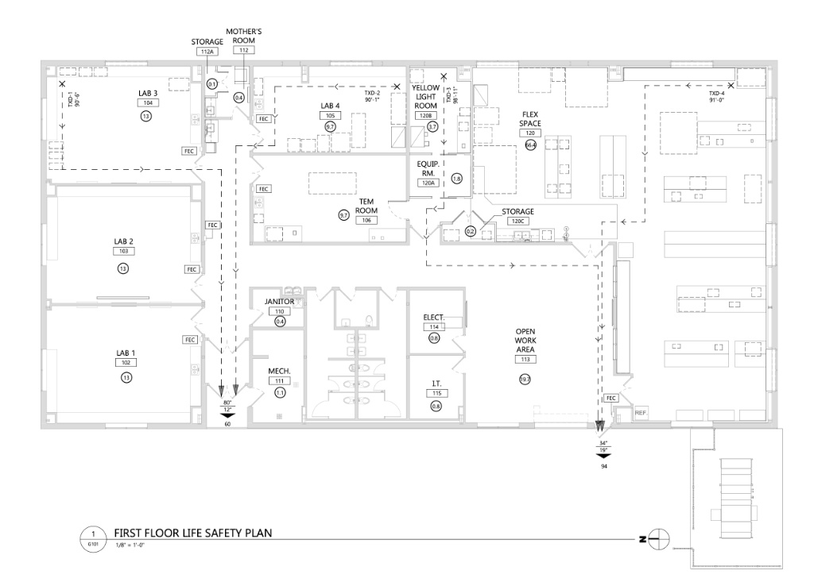

MPaCT
Lab at NAU
The Microelectronics Processing, Characterization, and Testing Lab — a $13 million shared-use research facility housing 35+ advanced instruments, a Class 100 cleanroom, and expert staff open to universities, companies, and government agencies nationwide.
One facility. 35+ instruments. Open to every researcher who walks through the door.
The MPaCT Lab is Northern Arizona University's shared-use research facility for semiconductor processing, materials characterization, and device testing. It serves NAU students, faculty from any department, visiting researchers, and industry engineers — all under the same roof, using the same tools.
Full-time staff manage every instrument, run training sessions, and support projects from undergraduate coursework to federally funded research and industry contract work. You bring the science — we handle the rest.
Open Access. World-Class Tools.
The Microelectronics Processing and Characterization Testing Lab (MPaCT) is Northern Arizona University's centralized shared-use research facility for microelectronics, advanced materials, device fabrication, and technical characterization. Funded through a combination of state appropriations, federal grants, and industry partnerships, the lab houses over 35 instruments across a 3,000+ sq ft research facility featuring a Class 100 cleanroom and adjacent characterization suites.
As a shared-use facility, the MPaCT Lab is not restricted to any single department or college. NAU students, faculty from any discipline, visiting researchers, and private-sector engineers all use the same equipment under the same roof. Staff handle instrument maintenance, calibration, and user training so researchers can focus on their work.


What the Lab Does
The MPaCT Lab supports research and instruction across electrical engineering, mechanical engineering, computer engineering, physics, and materials science. The facility handles everything from undergraduate coursework to federally funded research programs.
Researchers use the lab to deposit and pattern thin films, characterize material properties at the nanoscale, fabricate prototype devices, and perform failure analysis. The lab also serves as the training ground for NAU's semiconductor workforce programs.
Core Capabilities
Metrology
AFM, SEM, Optical Profiling
Lithography
Mask Aligner, Spin Coating
Deposition
Sputtering, Evaporation, ALD
Characterization
Electrical, Thermal, Optical
Building the Future
From blueprint to breakthrough — how the MPaCT Lab came to life.

A Research Milestone Built with Purpose
The MPaCT Lab represents NAU's commitment to next-generation materials and device research. Over four phases, we transformed a vision into a fully operational cleanroom facility — achieving ISO 6 standards and attracting partners including TSMC and Intel.
How to Access the Lab
Four clear steps to begin your research at the MPaCT facility.
Fill out our equipment or facility access form. Describe your project scope and the instruments you need.
Our staff reviews your request, confirms availability, and follows up with access options and rate estimates.
Complete required general safety training and instrument-specific certification before your first session.
Schedule and run sessions with staff support available throughout. Track time and generate data reports.
Areas of Scientific Focus
MPaCT enables research across a broad spectrum of materials science and semiconductor engineering domains.
Investigation of PVD/CVD thin film properties — composition, thickness uniformity, crystal orientation, and stress — foundational for semiconductor and photovoltaic device engineering.
Photolithography, nanoimprint lithography, and laser ablation for creating device patterns at micron and sub-micron scale — from academic prototypes to near-industrial specifications.
Structural and chemical analysis of materials from bulk crystals to nanoparticles — integrating SEM, TEM, XRD, SIMS, and surface profiling into comprehensive data packages.
Wafer-level and die-level electrical characterization of semiconductor devices — supporting transistor physics research, process development, and performance benchmarking.
Ready to Do Something Extraordinary?
The MPaCT Lab is open to NAU students, faculty, external researchers, and industry engineers. Reach out to discuss access, training requirements, and collaboration opportunities.